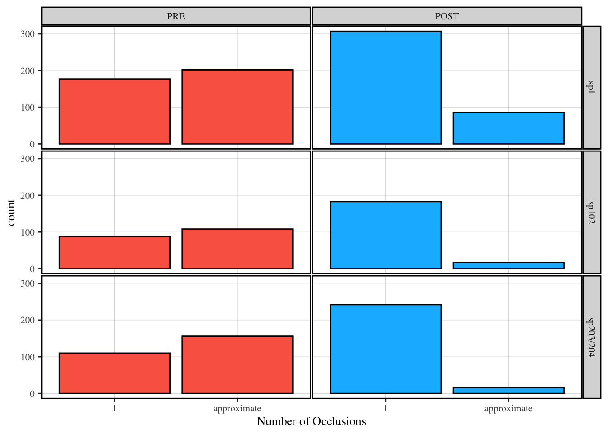
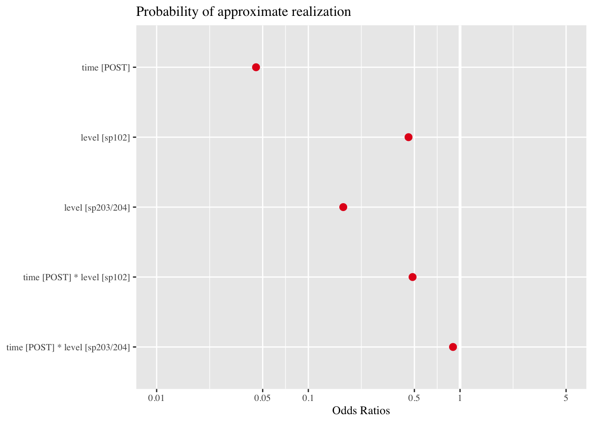
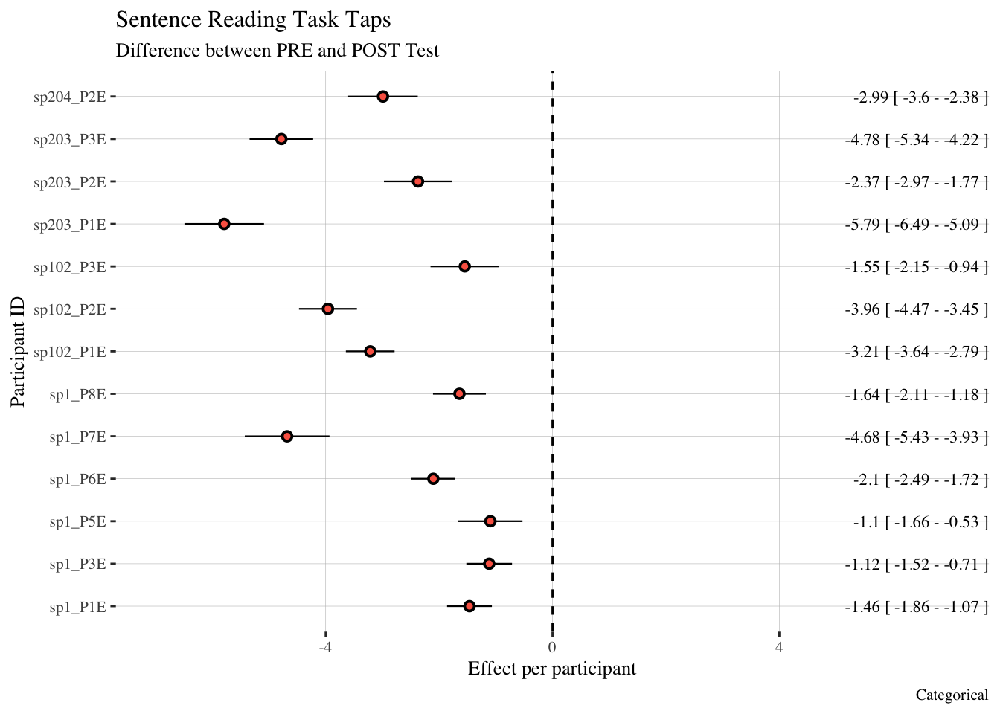
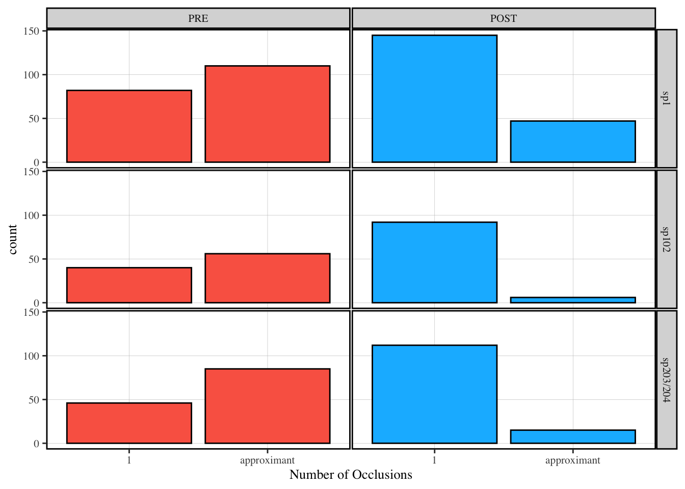
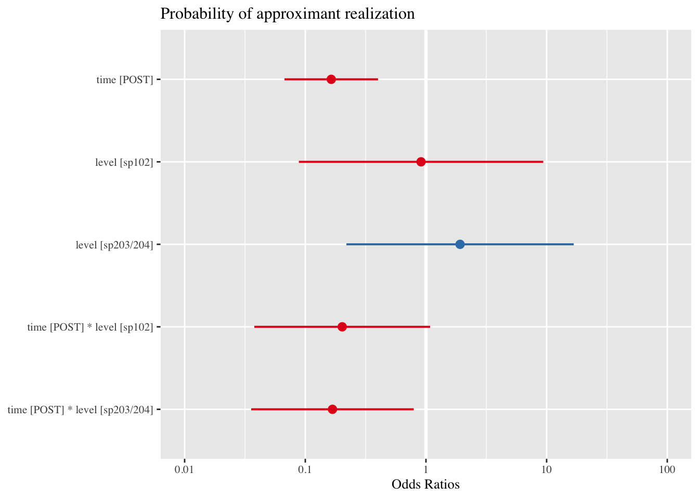
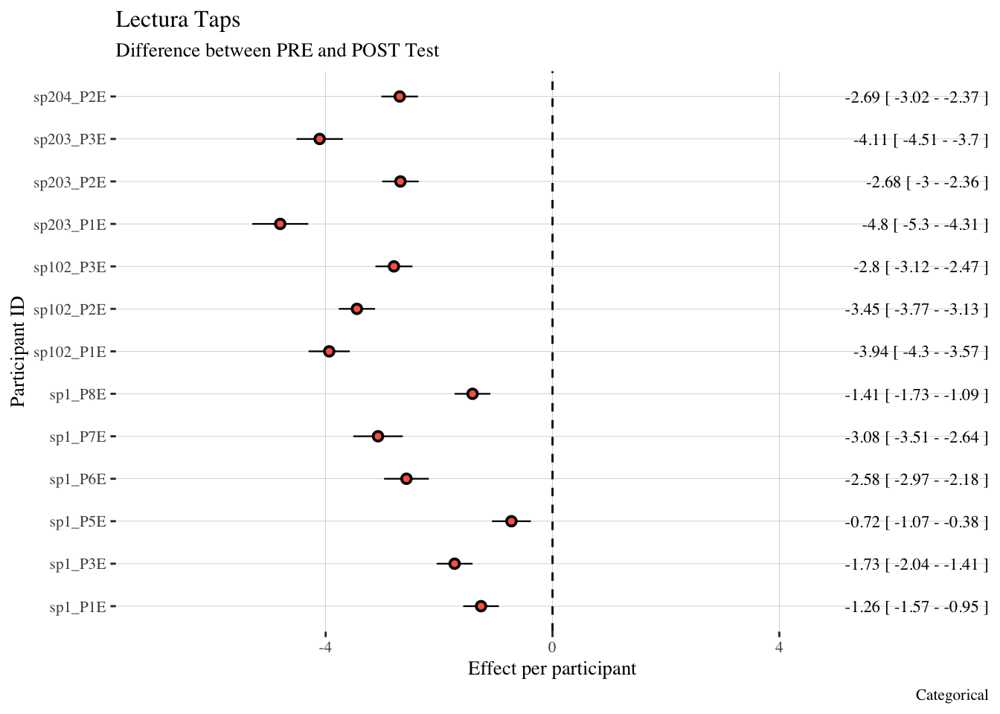
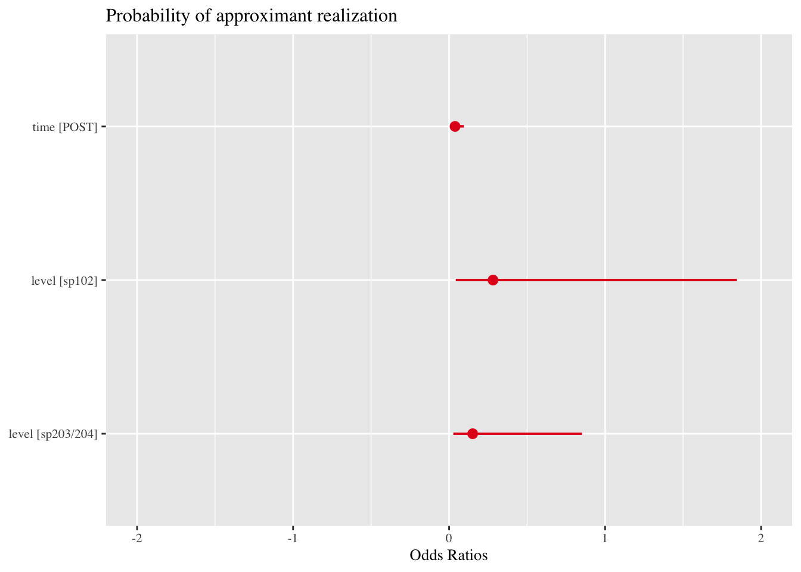
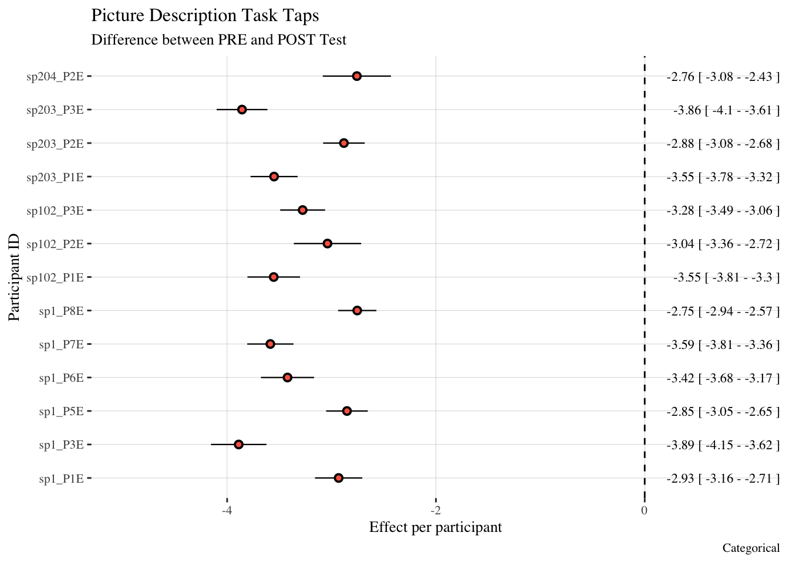

| level | no_occlusions | PRE | POST |
|---|---|---|---|
| sp1 | 1 | 177 | 307 |
| sp1 | approximate | 202 | 86 |
| sp102 | 1 | 88 | 183 |
| sp102 | approximate | 108 | 17 |
| sp203/204 | 1 | 110 | 242 |
| sp203/204 | approximate | 156 | 16 |
Categorical Taps
Statistical Analysis
Given that the majority of tap realizations were either approximates or with one occlusion, the data were analyzed using a series of binary logisitic regression models using a logit link function. These models predict the probability (reported as log-odds and odds ratios) that a tap will be realized as an approximate. Like the continuous models and categorical trill model, the fixed effect and random effect structures are the same for the Sentence Reading Task and the Lectura: Each model included the fixed effects predictors of time (2 levels: pre or post-test), group, (3 levels: Spanish 1 - sp1, Spanish 2, sp102, and the combined Spanish 203/204 group) and their interaction. The Picture Naming Task full model failed to converge. As a result, the model reported here analyzes the probability of an approximate realization as a function of time and group but not their interaction. Given that the body of evidence produced thus far has not produced compelling evidence that there are group differences, the lack of a full model should not greatly impact the results.
More importantly, all models maintain the random effect structures, which allow for individual differences ot be examined. In particular, the random slope by participant was included to determine how test time impacted each participant individually.
These random slopes produced by the model represent adjustments to the fixed effect predictor of interest, and show how each participant’s duration of taps or trills changed as a function of time. Main effects and interactions were assessed by carrying out nested model comparisons, and model assumptions were checked by visual inspection of Q-Q plots.
Sentence Reading Task
The analyses here follow the same order as the others: groups analysis followed by individual analysis. First the group analysis is reported, followed by individual anaysis.
Table 1 shows the number of approximate and single occlusion realizations of taps in each group at both pre and post test. Figure 1 is a visualization of the same information.
Table 1
Figure 1

Table 2 shows the nested model comparisons, where there is a main effect of time, but not group nor the interaction.
Table 2
| Model | Chisq | Df | P-value |
|---|---|---|---|
| Time | 16.22 | 1 | < .05 |
| Group | 3.49 | 2 | 0.17 |
| Time:Group Interaction | 3.19 | 2 | 0.2 |
Table 3 and Figure 2 show the results of the group model. The model in Table 3 reports odds-ratios, where an odds ratio of less than 1 is a negative association between the predictor and the outcome. The same information is plotted in Figure 2, which suggest that post-test was associated with a lower probability of realizing a tap as an approximate.
Table 3
| Probability of approximate realization | |||
|---|---|---|---|
| Predictors | Odds Ratios | CI | p |
| (Intercept) | 1.57 | 0.29 – 8.39 | 0.600 |
| time [POST] | 0.13 | 0.04 – 0.43 | 0.001 |
| level [sp102] | 0.77 | 0.04 – 13.73 | 0.857 |
| level [sp203/204] | 1.71 | 0.12 – 24.38 | 0.691 |
| time [POST] * level [sp102] |
0.41 | 0.05 – 3.42 | 0.411 |
| time [POST] * level [sp203/204] |
0.13 | 0.02 – 0.98 | 0.048 |
| Random Effects | |||
| σ2 | 3.29 | ||
| τ00 participant | 4.18 | ||
| τ11 participant.timePOST | 1.94 | ||
| ρ01 participant | -0.85 | ||
| ICC | 0.45 | ||
| N participant | 13 | ||
| Observations | 1692 | ||
| Marginal R2 / Conditional R2 | 0.282 / 0.608 | ||
Figure 2

Figure 3 shows the change in log odds of each participant as a function of test time. A negative estimate in this case can be interpreted as a decrease in probability as a function of training. In other words, every participant showed evidence of increased probability of realizing the tap with one occlusion at post test.
Figure 3

Lectura
Table 4 and Figure 4 show the number of approximate and single occlusions realizations of taps in the lectura task. Table 5 reveals a main effect of both time and group, but not the interaction. This suggests that, as in the other models, time impacted the probability of approximate realization. Differently from the others, the main effect of group suggest that the baseline probability of producing an approximate at the pre-test was distinct. In particular, the model output (Figure 5 and Table 6) suggest that both the Spanish 203/204 groups was more likely at pre-test to realize taps as approximates, but this effect appears to be marginal.
Table 4
| level | no_occlusions | PRE | POST |
|---|---|---|---|
| sp1 | 1 | 82 | 145 |
| sp1 | approximate | 110 | 47 |
| sp102 | 1 | 40 | 92 |
| sp102 | approximate | 56 | 6 |
| sp203/204 | 1 | 46 | 112 |
| sp203/204 | approximate | 85 | 15 |
Figure 4

Table 5
| Model | Chisq | Df | P-value |
|---|---|---|---|
| Time | 19.00 | 1 | < .05 |
| Group | 6.81 | 2 | < .05 |
| Time:Group Interaction | 4.98 | 2 | 0.08 |
Figure 5

Table 6
| Probability of approximate realization | |||
|---|---|---|---|
| Predictors | Odds Ratios | CI | p |
| (Intercept) | 1.76 | 0.45 – 6.84 | 0.416 |
| time [POST] | 0.16 | 0.07 – 0.40 | <0.001 |
| level [sp102] | 0.91 | 0.09 – 9.38 | 0.937 |
| level [sp203/204] | 1.92 | 0.22 – 16.78 | 0.556 |
| time [POST] * level [sp102] |
0.20 | 0.04 – 1.08 | 0.062 |
| time [POST] * level [sp203/204] |
0.17 | 0.04 – 0.79 | 0.024 |
| Random Effects | |||
| σ2 | 3.29 | ||
| τ00 participant | 2.63 | ||
| τ11 participant.timePOST | 0.77 | ||
| ρ01 participant | -0.95 | ||
| ICC | 0.34 | ||
| N participant | 13 | ||
| Observations | 836 | ||
| Marginal R2 / Conditional R2 | 0.305 / 0.538 | ||
Finally, Figure 6 again shows the change in log-odds of realizing a tap as an approximate from pre to post test. Again, all estimates are negative, providing evidence that training was associated with a decrease in the probability of realizing a tap as an approximate.
Figure 6

Picture Naming Task
Finally, the picture naming task also provided evidence of the effectiveness of training in tap realization training. Table 7 and Figure 7 show the raw data, while the nested model comparisons (Table 8) reveal a main effect for time. Again, the model’s odds ratios (Table 9, Figure 8) of under 1 suggest a lower probability of approximate realization at the post-test. Finally, Figure 9 shows that approximate realizations were less probable at post-test by all participants.
Table 7
| level | no_occlusions | PRE | POST |
|---|---|---|---|
| sp1 | 1 | 10 | 43 |
| sp1 | approximate | 50 | 18 |
| sp102 | 1 | 4 | 19 |
| sp102 | approximate | 14 | 2 |
| sp203/204 | 1 | 13 | 32 |
| sp203/204 | approximate | 19 | 3 |
Figure 7
Table 8
| Model | Chisq | Df | P-value |
|---|---|---|---|
| Time | 19.49 | 1 | < .05 |
| Group | 4.79 | 2 | 0.09 |
Table 9
| Probability of approximate realization | |||
|---|---|---|---|
| Predictors | Odds Ratios | CI | p |
| (Intercept) | 9.20 | 2.64 – 32.11 | 0.001 |
| time [POST] | 0.04 | 0.02 – 0.10 | <0.001 |
| level [sp102] | 0.28 | 0.04 – 1.84 | 0.186 |
| level [sp203/204] | 0.15 | 0.03 – 0.85 | 0.032 |
| Random Effects | |||
| σ2 | 3.29 | ||
| τ00 participant | 1.89 | ||
| τ11 participant.timePOST | 0.22 | ||
| ρ01 participant | -1.00 | ||
| ICC | 0.29 | ||
| N participant | 13 | ||
| Observations | 227 | ||
| Marginal R2 / Conditional R2 | 0.428 / 0.593 | ||
Figure 8

Figure 9
